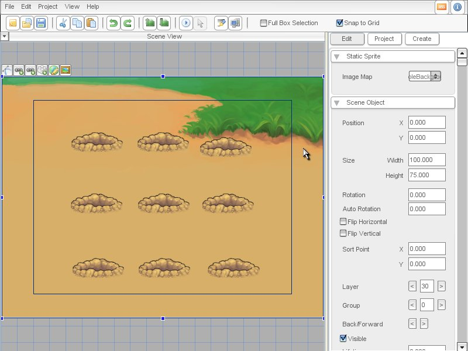
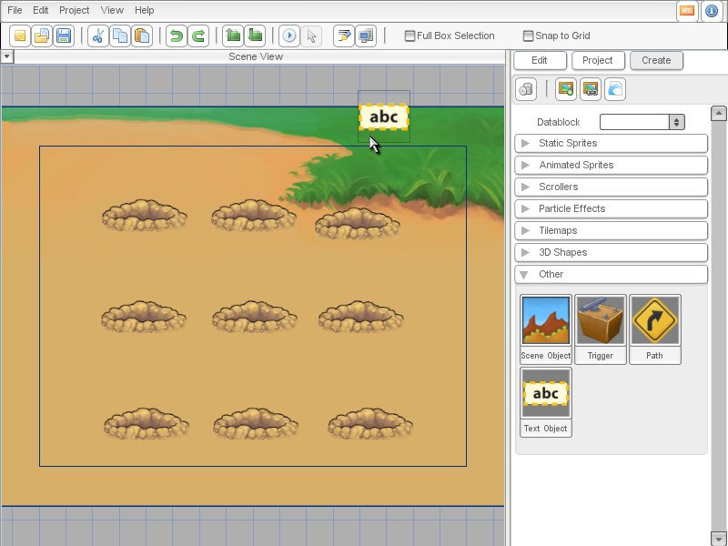
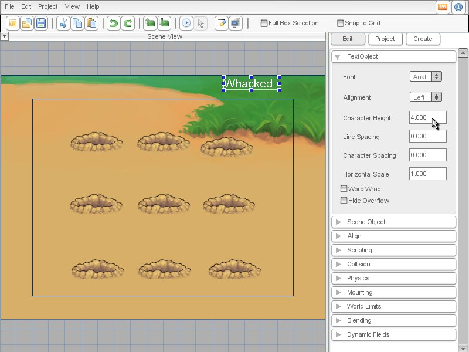
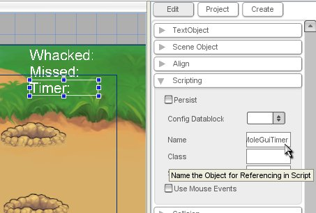
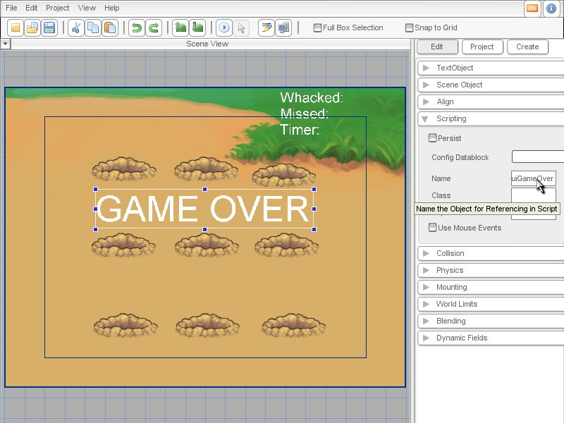

Torque 2D - Whack-A-Mole Tutorial Part 4
Part 4 - Score and a Timer
Creating a background
In this section, we'll be making Whack-A-Mole a more complete game by adding a background, score, and a timer. Let's start with the background. Simply drag and drop the imageMoleBackground static-sprite from the Create tab. Then go to the Edit tab and enter the following properties: Position (0,0), Size (100, 75), Layer 30 (As shown in Figure 4.1)

Figure 4.1
Adding text to the level
Now that we have a background, we are
going to add a very simple gui to the game. Go to the Create tab and
open the Other rollout. Drag a Text Object onto the grass at the
upper-right corner of the level. (See Figure 4.2)

Figure 4.2
When you drop the text object, you will see a cursor. Enter the text "Whacked: ", then press Escape to exit the Text Edit mode. The text's default is way too big, so go to the Edit tab and, in the Text Object rollout, change the Character Height to 4. Also, we'll want to add a number to the end in the game, so turn off "Hide Overflow". (See Figure 4.3)

Figure 4.3
Using this same process, create two more Text Objects with the
text "Missed:" and "Timer:" (you may want to use the Edit tab to position
them evenly). Next, go to the Scripting rollout of the Edit tab and name
the three Text Objects "MoleGuiWhacked", "MoleGuiMissed", and "MoleGuiTimer"
respectively. (See Figure 4.4)

Figure 4.4
Updating the GUIs
You should be presented with the whole new background when you click Run Game. What we have to do is update the GuiTextCtrls. That will happen mostly in moleLevel.cs. First we modify MoleLevel::onLevelLoaded to reset score and then we introduce a global variable that holds the number of seconds one game lasts.
$MOLE_LEVEL::timePerGame = 30; // seconds
function moleLevel::onLevelLoaded(%this)
{
%this.respawnPointSet = new SimSet();
// set the occupied counter to zero
%this.spawnPointsOccupied = 0;
%this.maxCreationInterval = $MOLE_FACTORY::maxCreationInterval;
%this.minCreationInterval = $MOLE_FACTORY::minCreationInterval;
%this.speedUp = $MOLE_FACTORY::speedUp;
// Reset score
%this.whackedCount = 0;
%this.missedCount = 0;
// Reset the GuiTextCtrls
MoleGuiWhacked.text = "Whacked:" SPC %this.whackedCount;
MoleGuiMissed.text = "Missed:" SPC %this.missedCount;
// start the mole creation
%this.startFactory();
}
//Then we'll add functions to increase score and update the GuiTextCtrls.
function moleLevel::incWhackedCount(%this)
{
%this.whackedCount++;
MoleGuiWhacked.text = "Whacked:" SPC %this.whackedCount;
}
function moleLevel::incMissedCount(%this)
{
%this.missedCount++;
MoleGuiMissed.text = "Missed:" SPC %this.missedCount;
}
Code Sample 4.1
Now we only have to call MoleLevel::incWhackedCount() and MoleLevel::incMissedCount() whenever a mole is whacked or missed. We do that in mole::onAnimationEnd() (in the mole.cs):
function mole::onAnimationEnd(%this)
{
if( %this.getAnimationName() !$= ("animMoleComeOut" @ %this.moleColor) )
{
// free the respawn point for other moles
%this.respawnPoint.isOccupied = "";
// decrement the occupied counter
%this.sceneGraph.spawnPointsOccupied -= 1;
// update score
if( %this.getAnimationName() $= ("animMoleWhacked" @ %this.moleColor) )
%this.scenegraph.incWhackedCount();
else
%this.sceneGraph.incMissedCount();
//%this.sceneGraph.schedule( 1500, "spawnMole");
// we don't need to do the above line anymore because the factory will do it
%this.safeDelete();
}
}
Code Sample 4.2
And there you have it: A simple scoring system.
Next we will update the timer. When the level is loaded, a new scenegraph is created for it. That means that we can keep a timer based on the "scene-time", which should reflect the time the level is running. Let's use that for our timer code. We will use the onUpdateScene() callback (a "callback" is simply a function automatically called by the engine, that way we can place the function in script and respond to that event) of the scenegraph to update the GuiTextCtrl of the timer. Add this function to moleLevel.cs:
$MOLE_LEVEL::timePerGame = 60;
function moleLevel::onUpdateScene(%this) {
// Calculate how much time is left
%timeLeft = $MOLE_LEVEL::timePerGame -
%this.getSceneTime(); // Round it to full seconds
%timeLeft = mFloor(
%timeLeft + 0.5 );
// Update the GuiTextCtrl
MoleGuiTimer.text = "Timer:" SPC %timeLeft ;
}
Code Sample 4.3
Game Over
Now we need to add a check so that when the game is over, we show a "GAME OVER" message. We will not be adding a way to restart the game- you can add that yourself if you feel up to the challenge. First create a Text Object in the center of the screen with the text "GAME OVER" and the name MoleGuiGameOver. (See Figure 4.5)

Figure 4.5
Now we just need to add a couple lines to startGame and moleLevel::onUpdateScene to operate the Game Over message. In startGame, we want to make the Game Over invisible. Then, when we are out of time, we want to pause the scene and make it visible again.
function startGame(%level)
{
//exec game scripts
exec("./mole.cs");
exec("./molelevel.cs");
// Set The GUI.
Canvas.setContent(mainScreenGui);
Canvas.setCursor(DefaultCursor);
moveMap.push();
// this has been added:
sceneWindow2D.setUseObjectMouseEvents( true );
if( isFile( %level ) || isFile( %level @ ".dso"))
sceneWindow2D.loadLevel(%level);
moleGuiGameOver.visible = 0;
}
Code Sample 4.4
function moleLevel::onUpdateScene(%this)
{
// Calculate how much time is left
%timeLeft = $MOLE_LEVEL::timePerGame - %this.getSceneTime();
// Round it to full seconds
%timeLeft = mFloor( %timeLeft + 0.5 );
// Time-check
if( %timeLeft < 0 )
{
%this.setScenePause( true );
MoleGuiGameOver.visible = 1;
%timeLeft = 0;
}
// Update the GuiTextCtrl
MoleGuiTimer.text = "Timer:" SPC %timeLeft ;
}
Code Sample 4.5
Revision 2.1